カラーマネージャー
Color-Manager
Originは、Originで使用されるカラーリストとパレットを編集するために、カラーマネージャーツールを提供しています。
- GUIに表示するOriginカラーリストとパレットを指定できます。
- Webやファイルからカラーリストとパレットをインポートすることができます。
- 自分で編集し、新しくカラーリストとパレットを作成することができます。
カラーマネージャーのダイアログボックスを開くには：
- 環境設定：カラーマネージャをクリックするか、CTRL + SHIFT + Oを押します。
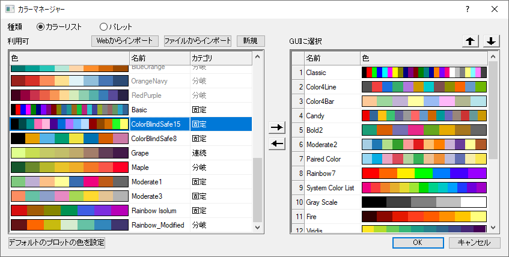
使用できるカラーリスト・パレット
カラーマネージャーツールの左パネルに、使用できるカラーリスト/パレットがリスト化されています。 Note: これらのカラーリスト/パレットは、すべてがOriginのGUIに表示されるわけではありません。
カラーリスト/パレットの名前セルをクリックし、名前を変更できます。カテゴリのドロップダウンリストをクリックし、未定義/ 連続/ 分岐/ 固定 のカテゴリを設定することができます。
名前やカテゴリのヘッダをクリックすると、名前やカテゴリでリストが並べ替わります。
GUIのカラーリスト・パレットを管理する
カラーマネージャーツールの右パネルに、色の編集のGUIで選択できるカラーリスト/パレットがリスト化されています。
現在のGUIにカラーリスト・パレットを追加する
- 左パネルで利用できるカラーリスト/パレットを選択します。（ShiftやCtrlを使って複数のカラーリスト・パレットを選択することができます。）
-
 ボタンをクリックし、選択したカラーリスト・パレットを右パネルに追加します。
ボタンをクリックし、選択したカラーリスト・パレットを右パネルに追加します。
GUIからカラーリスト・パレットを削除する
- GUIに選択リストでカラーリスト・パレットを選択します。
-
 ボタンをクリックして削除します。
ボタンをクリックして削除します。
GUIのカラーリスト・パレットを並び変える
- 目的のカラーリスト/パレットをクリックします。
-
 および
および  ボタンをクリックして順序を変更します。
ボタンをクリックして順序を変更します。
カラーリスト・パレットを編集する
- カラーリスト・パレットを右クリックし、色の編集を選択します。
- 組み込みのリストまたはパレットを編集するには、最初にそれらを複製することができます。複製したものは編集可能です。
- カラーリスト・パレットは、色の作成ダイアログを使用して編集します。
カスタムカラーリスト・パレットを削除する
- 左側のパネルで、カスタムリスト・パレットを右クリックして削除を選択します。
カラーリスト・パレットのインポート
Originは、Webサイトやローカルファイルから、カラーリストやパレットをインポートすることをサポートしています。新しいカラーリスト・パレットをインポートすると、利用可とGUIに選択のどちらのリストにも追加されます。
デフォルトでは、インポートされた20色未満のパレットは、パレット（.pal）ではなくカラーリスト（.oth）として保存されることに注意してください。システム変数@MPSの値を変更すると、この挙動を変更できます。
Webからインポート
このボタンをクリックすると、カラーリスト・パレットのWebサイトのURLを入力するためのダイアログが表示されます。
OriginはドロップダウンリストにいくつかのURLサンプルを提供しています。それらを選択して、カラーリスト・パレットをインポートすることができます。
- 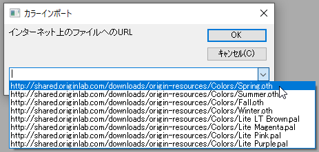
ファイルからインポート
このボタンをクリックすると、ユーザの持つカラーリスト・パレットのローカルファイルを選択することができます。
次のファイル形式をインポートできます：Scribus（.xml）、CorelDrawおよびCorel PhotoPaint（.xml）、Office Color Table（.soc）、Adobe Color（.aco）、Adobe Color Table（.act）、Adobe Swatch Exchange（.ase）、JASC PaintShopPro（.pal）、およびGNUPlot Palette（.pal）
新しいカラーリスト・パレットを追加する
新規ボタンをクリックし、色の作成ダイアログを開きます。このダイアログでは、必要に応じてカスタムカラーリストを追加できます。
- 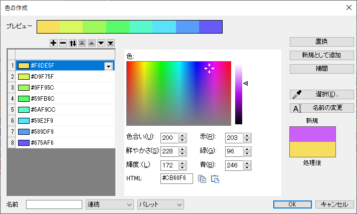
カラーリスト
左パネルで16進数カラーコード付きのカラーリストが表示されます。
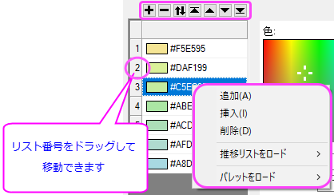
色の追加・挿入・削除
-
 ボタンをクリックする/カラーリストを右クリックして追加を選択し、カラーリストの最後に色を追加します。次に、さまざまな色の編集（スポイトツールを含む）を使用して色を指定し、置換をクリックします。
ボタンをクリックする/カラーリストを右クリックして追加を選択し、カラーリストの最後に色を追加します。次に、さまざまな色の編集（スポイトツールを含む）を使用して色を指定し、置換をクリックします。
- 色を挿入するには、リストの色を選択し、挿入をクリックして、選択された色の上に現在の色を挿入します。色の制御（スポイトツールを含む）の組み合わせを使用して新規の色を作成し、置換をクリックします。
- ボタン
 をクリックする/色を右クリックして削除を選択し、選択した色を削除します。
をクリックする/色を右クリックして削除を選択し、選択した色を削除します。
カラーリストを並び替え
- 反転ボタン をクリックして、カラーリストを反転させます。
- 上へ移動
 または下へ移動ボタンをクリックして、選択された色をリスト内で1つ分の位置に移動します。
または下へ移動ボタンをクリックして、選択された色をリスト内で1つ分の位置に移動します。
- 上へ移動ボタンをクリックして、選択した色を一番上に移動します。下へ移動 ボタン
 をクリックして、選択した色を一番下に移動します。
をクリックして、選択した色を一番下に移動します。
- リスト番号をドラッグして、カラーリストの順番を変えることもできます。
推移リスト・パレットのロード
カラーリストを右クリックし、推移リストをロードもしくはパレットをロードを選択して、推移リスト・パレットをロードします。そして、このカラーリストを変更して、新しいカラーリストとして保存できます。
色の定義
中央のパネルで、色を定義し、カラーリストに追加します。
色の定義には次の3つの方法があります。
- 色の選択に、クロスヘアとスライダーを使います。
- 目薬マーク（スポイトみたいな）マークをクリックして、ワークスペースの別の場所にある箇所の色をクリックで拾います。
- 編集ボックスにRGB, HSL値または色のHEXを入力します。
- 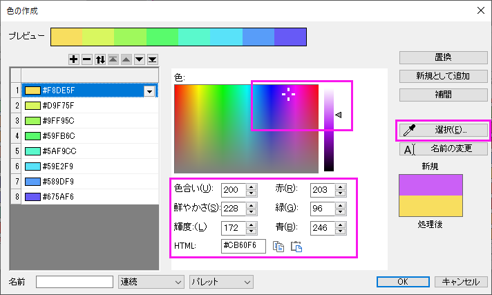
- リストの色を置き換えるには、色を定義し、置き換えたいリストの色を選択して置換をクリックします。
- リストに新しい色を追加するには、色を定義し、新規として追加をクリックします。
- 名前の変更をクリックして、選択したリストの色を名前の変更モードにします。このモードでは、カラーブロックの横にある16進数のカラーコードをクリックして、色に名前を付けることができます（なお、システムの色（「赤」など初期状態から設定済みの色）の名前は変更できません）。
補間
右側パネルで、補間ボタンをクリックします。ポップアップするダイアログで、グループで補間を選択し、補間タイプと補間される色の数を設定できます。
- 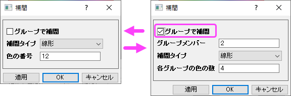
- このダイアログでは、パレットとカラーリストの両方を作成できます。
- パレットとカラーリストは2色からでも補間することができます。
- グループで補間を使用して、カラーリスト/パレットを拡張するか (グループメンバー < 各グループの色の数)、カラーリスト/パレットを縮小します (グループ メンバー > 各グループの色の数)。
- 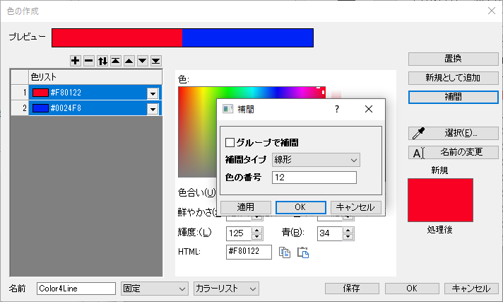
グループで補間
グループで補間：チェックを付けると、2つの編集ボックスが追加されます。
- グループメンバーは、既存の色のシーケンスでグループ化するカラーブロックの数を指定します (1つの「グループ」には最低2つのブロックが必要です)。
- 各グループの色の数は、各「グループ」で色を補間した後に得られる色数を指定します。
- 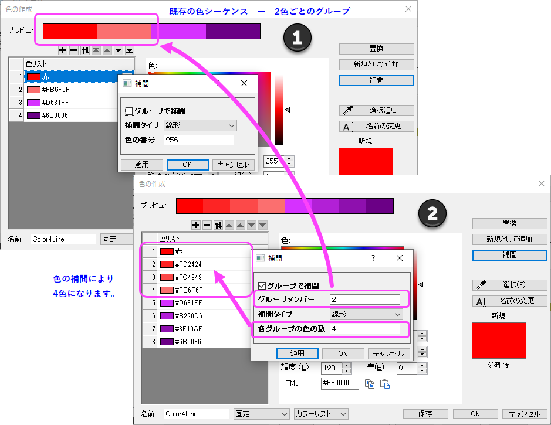
補間タイプ
これらの4つの補間タイプを指定できます。
- 線形
- スプライン
- B-スプライン
- Akimaスプライン
それぞれの補間法のアルゴリズムについては、Xファンクションのinterp1xyを参照してください。
| OK
|
プレビューを生成します。
|
| OK
|
プレビューを受け入れ、ダイアログを閉じて、カラーリスト・パレットをカラーマネージャに追加します。
|
| キャンセル
|
プレビューを破棄し、補間ダイアログを閉じて、元のリストに戻ります。
|
名前とカテゴリの設定
一番下にある名前編集ボックスで、ユーザ定義カラーリストの名前を編集します。
- 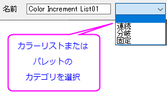
カテゴリ
- 連続：このカテゴリのカラーリストの色は、2つの主要な色の間で徐々に変化しています。そして、その変化は単一の色相です。
- 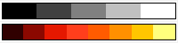
- 分岐：このカテゴリのカラーリストの色は、3つの主要な色の間で徐々に変化しています。そして、その変化は多色です。
- 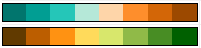
- 固定：このカテゴリのカラーリストの色は、主要な色によって徐々に変化することはありません。
- 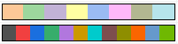
- 未定義：カラーリストが以上3つのカテゴリに属していない場合は、未定義に設定できます
既存のカラーリスト/パレットを統合
既存のカラーリスト/パレットを統合することができます。統合するリスト/パレットの合計色数が256色より多くなるときは色を統合できません。（すなわち色を統合は使用できません。）
- カラーマネージャで、2つ以上のカラーリスト/パレットを選択します。
- 右クリックして、色を統合を選択します。
 | 色の合計数は256を超えることはできないため、色を統合が使用可能になる前に、既存のリスト/パレットの色の数を減らす必要がある場合があります。グループで補間オプションを使用して、既存のリスト/パレットの色を体系的に削減し、それらを統合できるようにします。
|
デフォルトのプロットの色を設定
カラーリストラジオボタンが選択されている場合にのみ使用できます。ボタンをクリックし、テーマ・オーガナイザダイアログのシステム推移リストを開きます。